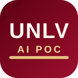

Admissions
Meet students where they begin
Help visitors ask basic questions without needing to understand campus structure, department ownership, or internal terminology.

UNLV Messaging POC
Prospective student support demo
Salesforce Embedded Messaging + GitHub Pages
This proof of concept gives prospective students a simple public landing page, a clear starting point, and guided example prompts to begin the conversation.
Once the widget loads, use the chat launcher in the bottom-right corner to begin.
Start here
These prompts are written to feel like a real student or family member beginning their journey with UNLV.
Click any prompt to copy it, then paste it into the chat.
Admissions
Help visitors ask basic questions without needing to understand campus structure, department ownership, or internal terminology.
Support
Use responses to point students toward applications, records, visits, financial aid, and the right follow-up channels.
Scalability
This page stays lightweight for demos today, while leaving room for richer flows, analytics, and branded experience layers later.
POC framing
The goal is not a full website yet. It is a clear, branded demo that shows how a prospective student can discover the chat, understand what to ask, and start getting value immediately.
Good first demo scenarios